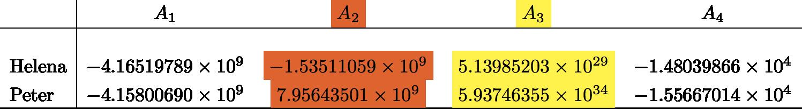

Date & Time: Sept. 28, 2012
Location: campus
Computing context: MachoMac
(/Desktop/Research/CppHenyeyCode/src, /Desktop/Research/BodenheimerCode/UnalteredCode)
From last time:
Comparison of the outermost A-matrix values:
 Outermost
A-matrix values (table 1)
[The big scan of my handwritten notes went here. That was a huge file! While I was waiting for 'convert' to join the separate scans together-- which took about 1/2 an hour-- I looked into handwriting ocr with graphics tablets as an alternative way to still do handwritten work but get it into the computer. Apparently, Macs have this 'Ink' program that only shows up when the machine detects that a graphics tablet has been plugged in. It has the ability to do handwriting --> text recognition/conversion, which sounds like EXACTLY what I need. Basically, an old-school write-in lab notebook, but in my computer. And ctrl-f searchable. That would be AWESOME.]
To Do Today:
Get both Peter and Helena codes to print out the Ratm values that are being generated during their outmost E24 calculations.
Need to get original Ratm, and also Ratm when you perturb the R at the outermost mass cell.
In the process of
modifying Helena to print out the E42 stuff as it's calculating it,
I see that after the main loop over the J-1 mass cells, I set the
entire outer next-to-last (jMax-2) E matrix to
zero. That's probably the problem, right there. So, let's comment
out that line and see what happens.
Nope, doesn't fix the dL profile issues.
Anyway, the outermost E values = 0 in both Peter and Helena anyway, as they should.
Let's check the outermost CDEGA matrix values and see what effect (if any) that correction in Helena made.
Need to scan in my handwritten notes-- I've figured out that the E differences are because Peter's code includes a calculation of the conductive opacities, and mine doesn't. Apparently that 1 part in 10^8 difference is actually important when you reach the outer boundary of your ball of gas.
Resume here tomorrow, trying to back-out/triangulate what equations he's using to get Kcond in his code.
Also, check (via python scripts and judicious substitutions), that the E42 thing is really what's responsible for driving the difference b/w the codes' results, and that it doesn't turn out to just be totally inconsequential.
To keep in mind for later:
For the 1 Mjup model: do the Peter and Helena models' dX values (raw) now agree, too?